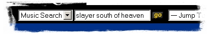
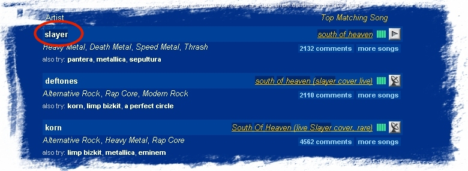
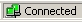
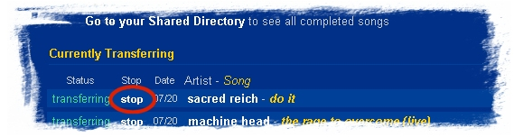

| Homepage: http://www.ractive.ch/gpl/JAGS.html |
Introduction
Audiogalaxy is a MP3 file-sharing platform. It somehow
works like napster, but the user-interface is quite different. The whole system
is web-based. This means that you take all your actions in your
web-browser.
JAGS has a built-in webbrowser for easy access.
In order to download and share your songs, the AudioGalaxy satellite must be running. The satellite does nothing more than sending/receiving the files.
First steps
When you start JAGS for the first time after the installation you either can create a new account or enter the information about an existing account.
You then have to choose a directory you want to share with other users. This directory will be also your download directory. You can change the download location afterward, though.
When you first start JAGS, the main view looks quite messy. All panes are arranged vertically. Rearrange them as you want to have them :-)
Please have a look here, to have some tips how to do that.... (highly recommended!!!).
Change you preferences!
Search and download
Search for songs
To search for songs, enter your search in the search field of the audiogalaxy webpage:

To search for a specific song of a specific band, enter the bandname and the songname.
A list of available songs will appear:

This first page gives you an overview of all found songs. The result also can contain cover versions etc.
To limit the search to a certain band, click on the bandname (as indicated in the picture). The result list will only contain songs of this band then.
To search for all songs of a band, just enter the bandname in the search field. In most cases all available songs of the band will be listed. Otherwise you can select the correct band in the overview pages as described above, by clicking no the band name.
Download a song
To download songs, the satellite must be connected and you must be logged in. Have a look at the status-bar of JAGS to see if a connection with audio-galaxy could be established:

To downlaod a song you have two possibiblities:
In most cases it's ok to click on the satellite.
Cancel downloads
To stop downloading a song, go to your satellite queue, either by clicking on the satellite icon on audiogalaxy's page or by click on the satellite icon in the browser toolbar
A list of all current downloads will be shown.

Click on "stop" of a certain song to stop the download.